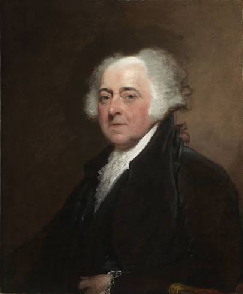

Sobre mí

Mi nombre es Adam Szopa y soy estudiante de 1.º BTI en el Colegio Bautista de Encarnación.
Me interesa la tecnología y la informática. En Laboratorio estoy aprendiendo a crear páginas web con HTML y CSS, organizar su contenido y usar enlaces, listas y tablas.
En clase he trabajado en mi portafolio web y en una tabla sobre las generaciones de computadoras. También participo en Teachora, un proyecto de tecnología educativa.
Con estos trabajos sigo practicando y aprendiendo a presentar mis ideas de forma clara en una página web.